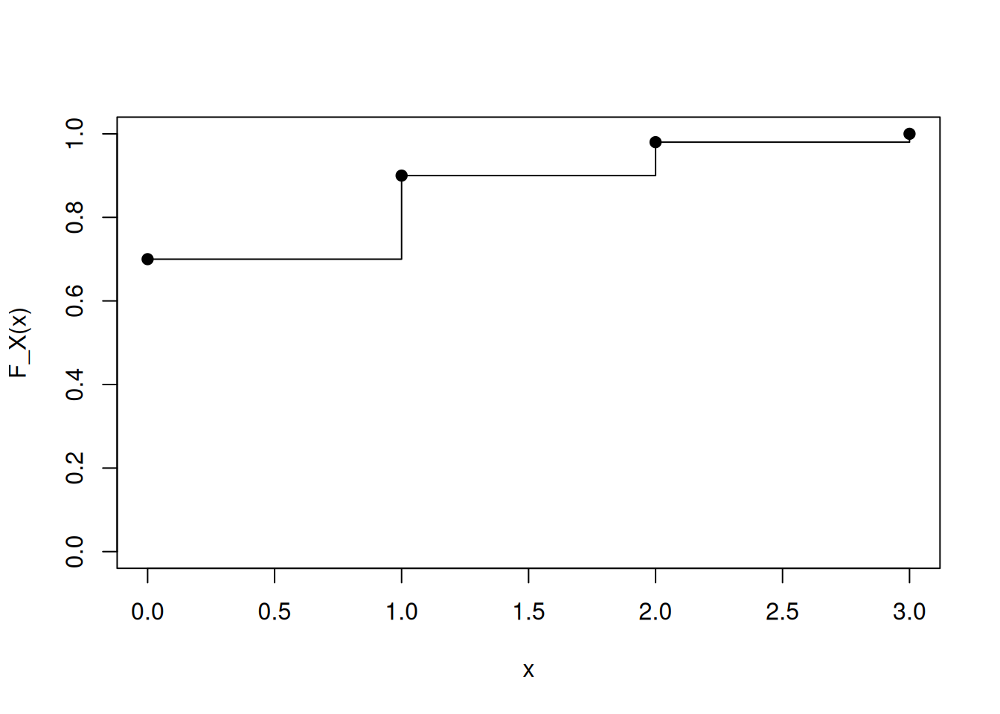
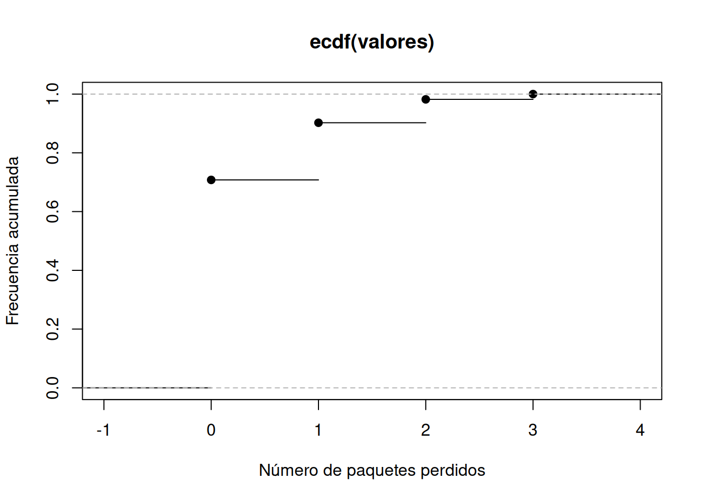

x <- 0:3
p <- c(0.70, 0.20, 0.08, 0.02)
F <- cumsum(p)
data.frame(x = x, probabilidad = p, acumulada = F) x probabilidad acumulada
1 0 0.70 0.70
2 1 0.20 0.90
3 2 0.08 0.98
4 3 0.02 1.00Al finalizar este capítulo, el estudiante será capaz de:
Un experimento aleatorio produce resultados en un espacio muestral \(\Omega\). Sin embargo, en muchas aplicaciones no interesa conservar toda la descripción del resultado: necesitamos asociarle un valor numérico.
Una variable aleatoria es una función
\[ X:\Omega\longrightarrow\mathbb R. \]
A cada resultado elemental \(\omega\in\Omega\) le asigna un número real \(X(\omega)\).
La palabra “variable” puede ser engañosa al principio. Una variable aleatoria no es un número que cambia caprichosamente: es una función perfectamente definida. Lo aleatorio proviene de que no sabemos qué \(\omega\) ocurrirá.
Consideremos
\[ \Omega=\{CC,CS,SC,SS\}, \]
donde \(C\) significa cara y \(S\) sello. Definamos
\[ X=\text{número de caras obtenidas}. \]
Entonces
\[ X(CC)=2, \]
\[ X(CS)=X(SC)=1, \]
y
\[ X(SS)=0. \]
La variable aleatoria transforma cuatro resultados elementales en sólo tres valores posibles:
\[ \{0,1,2\}. \]
Si la moneda es equilibrada,
\[ P(X=0)=\frac14, \qquad P(X=1)=\frac12, \qquad P(X=2)=\frac14. \]
La expresión
\[ \{X\le 1\} \]
representa en realidad el conjunto de resultados elementales para los cuales la variable toma un valor menor o igual que 1:
\[ \{X\le1\}=\{SS,CS,SC\}. \]
Por eso podemos escribir
\[ P(X\le1)=\frac34. \]
Esta conexión entre eventos en \(\Omega\) e intervalos de números reales es central para toda la teoría de variables aleatorias.
Una variable es discreta cuando sus valores posibles forman un conjunto finito o numerable.
Ejemplos:
Una variable es continua cuando puede tomar valores en intervalos de la recta real.
Ejemplos:
En los capítulos siguientes estudiaremos por separado las distribuciones discretas y continuas.
Para cualquier variable aleatoria \(X\), definimos su función de distribución acumulada por
\[ \boxed{ F_X(x)=P(X\le x) } \]
para todo \(x\in\mathbb R\).
La función \(F_X\) responde una pregunta muy concreta:
¿qué probabilidad se ha acumulado hasta el valor \(x\)?
Para \(X=\) número de caras en dos lanzamientos,
\[ P(X=0)=\frac14, \qquad P(X=1)=\frac12, \qquad P(X=2)=\frac14. \]
Por tanto,
\[ F_X(x)= \begin{cases} 0, & x<0,\\ \frac14, & 0\le x<1,\\ \frac34, & 1\le x<2,\\ 1, & x\ge2. \end{cases} \]
La CDF de una variable discreta tiene forma escalonada. Cada salto corresponde a una probabilidad puntual.
Toda función de distribución acumulada satisface:
\[ \lim_{x\to-\infty}F_X(x)=0. \]
\[ \lim_{x\to\infty}F_X(x)=1. \]
\[ \lim_{t\downarrow x}F_X(t)=F_X(x). \]
En una variable discreta, la magnitud del salto en \(x\) es precisamente
\[ P(X=x)=F_X(x)-F_X(x^-), \]
donde
\[ F_X(x^-)=\lim_{t\uparrow x}F_X(t). \]
La CDF permite obtener muchas probabilidades sin volver al espacio muestral.
\[ \boxed{ P(a<X\le b)=F_X(b)-F_X(a) } \]
\[ P(X>x)=1-F_X(x). \]
En general,
\[ P(X=x)=F_X(x)-F_X(x^-). \]
Para una variable continua, este salto es cero en todos los puntos.
Sea \(X\) el número de paquetes perdidos en un bloque de transmisión y supongamos
\[ P(X=0)=0.70, \]
\[ P(X=1)=0.20, \]
\[ P(X=2)=0.08, \]
\[ P(X=3)=0.02. \]
Entonces
\[ F_X(0)=0.70, \]
\[ F_X(1)=0.90, \]
\[ F_X(2)=0.98, \]
y
\[ F_X(3)=1. \]
La probabilidad de perder más de un paquete es
\[ P(X>1)=1-F_X(1)=0.10. \]
Podemos representar una distribución discreta mediante sus valores y probabilidades.
x <- 0:3
p <- c(0.70, 0.20, 0.08, 0.02)
F <- cumsum(p)
data.frame(x = x, probabilidad = p, acumulada = F) x probabilidad acumulada
1 0 0.70 0.70
2 1 0.20 0.90
3 2 0.08 0.98
4 3 0.02 1.00La función escalonada puede graficarse con:
plot(x, F, type = "s",
ylim = c(0, 1),
xlab = "x",
ylab = "F_X(x)")
points(x, F, pch = 19)
La función ecdf() de R construye una función de distribución empírica a partir de una muestra.
set.seed(2026)
valores <- sample(
0:3,
size = 5000,
replace = TRUE,
prob = c(0.70, 0.20, 0.08, 0.02)
)
F_emp <- ecdf(valores)
plot(F_emp,
xlab = "Número de paquetes perdidos",
ylab = "Frecuencia acumulada")
Al aumentar el tamaño de la simulación, la CDF empírica se aproxima a la CDF teórica.
En aplicaciones reales, una variable aleatoria resume aspectos relevantes de un resultado complejo.
Por ejemplo, el resultado de un sistema de sensores podría ser un vector completo de mediciones. Podemos definir
\[ X(\omega)=\text{máxima temperatura registrada}, \]
o
\[ Y(\omega)=\text{número de sensores que excedieron un umbral}. \]
Dos variables diferentes pueden construirse sobre el mismo experimento y responder preguntas distintas.
La edición web incluye un recurso interactivo basado en tres lanzamientos de moneda. El estudiante puede elegir una regla de transformación, por ejemplo:
El recurso muestra:
Así se observa directamente que una variable aleatoria es una función que agrupa resultados y que la CDF acumula probabilidades.
Representa en una tabla los valores posibles \(x_1<\cdots<x_m\) y sus probabilidades \(p_i\). Construye los acumulados
\[ F_i=\sum_{j=1}^{i}p_j. \]
Después representa la función escalonada que mantiene el valor \(F_i\) desde \(x_i\) hasta antes de \(x_{i+1}\).
Utiliza deslizadores para modificar las probabilidades \(p_i\) manteniendo
\[ \sum_i p_i=1. \]
Observa cómo cambian simultáneamente la distribución puntual y la CDF.
| Material | Formato | Acceso | Propósito |
|---|---|---|---|
| Cuaderno de Google Colab | Notebook interactivo (R) | Abrir en Colab | Experimentar con transformaciones y CDF mediante código ejecutable. |
| Cuaderno de R | R Markdown | Abrir cuaderno R | Reproducir los ejemplos y simulaciones del capítulo en R/RStudio. |
| Interactivo | HTML/GeoGebra | Integrado en la edición web | Explorar visualmente la transformación \(\omega\mapsto X(\omega)\) y la CDF. |
| Presentación | PDF / PPT | Próximamente | Material de clase; se incorporará cuando estén disponibles los enlaces. |
| Video | Video | Próximamente | Explicación audiovisual del capítulo. |
| Infografía | Imagen / PDF | Próximamente | Síntesis visual de conceptos y fórmulas principales. |
Los cuadernos de R acompañan cada capítulo para que los ejemplos puedan reproducirse, modificarse y extenderse localmente en R/RStudio. Los cuadernos de Google Colab permiten trabajar desde el navegador sin preparar previamente el entorno local.
Una variable aleatoria es una función
\[ X:\Omega\to\mathbb R. \]
Su función de distribución acumulada es
\[ F_X(x)=P(X\le x). \]
La CDF existe para cualquier variable aleatoria, discreta o continua, y permite obtener probabilidades de intervalos. En los próximos capítulos estudiaremos las funciones específicas que describen distribuciones discretas y continuas.
El concepto de variable aleatoria y función de distribución acumulada sigue el tratamiento estándar de Walpole et al. (2012), Devore (2016), Montgomery y Runger (2018) y Johnson (2018). El código y las simulaciones son originales y se desarrollan en el espíritu computacional de Kerns (2010).